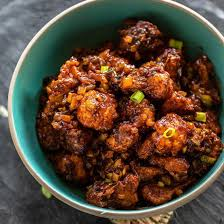

♦Gobi manchurian♦
Learn how to make Gobi manchurian with our easy-to-follow recipe.

Price : 100/-
Nutrition
| kcal |
fat |
saturates |
carbs |
sugar |
fibre |
protein |
salt |
| 260 |
30g |
9g |
15g |
8g |
0.5g |
15g |
0.3g |
Ingrediants:
1 tablespoon avocado oil (or any oil of choice)
1 tablespoon toasted sesame oil
1 tablespoon grated garlic
1 tablespoon grated ginger
1-2 green chilies (chopped)
Method
Step 1:
firstly, in a large kadai heat 4 tsp oil and saute 2 clove garlic,1 inch ginger and 1 green chilli on high flame.
Step 2:
also, saute ¼ onion and 2 tbsp spring onion on high flame.
Step 3:
further add ½ capsicum and continue to saute till they slightly change colour.
Step 4:
additionally add 2 tbsp tomato sauce, 1 tsp chilli sauce, 2 tsp vinegar, 2 tsp soy sauce, ¼ tsp pepper and ¼ tsp salt.
Step 5:
mix well and saute for a minute.
Step 6:
add cornflour slurry.
give a good mix until the gravy slightly thickens and turns translucent.
Step 7:
additionally, add fried gobi.
mix gently making sure the sauce has coated well uniformly.
Step 8:
finally, transfer gobi manchurian to a serving bowl and garnish with chopped spring onions green. serve with fried rice.